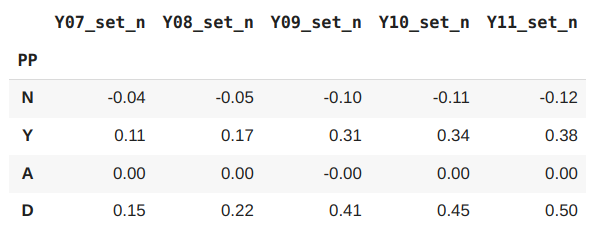
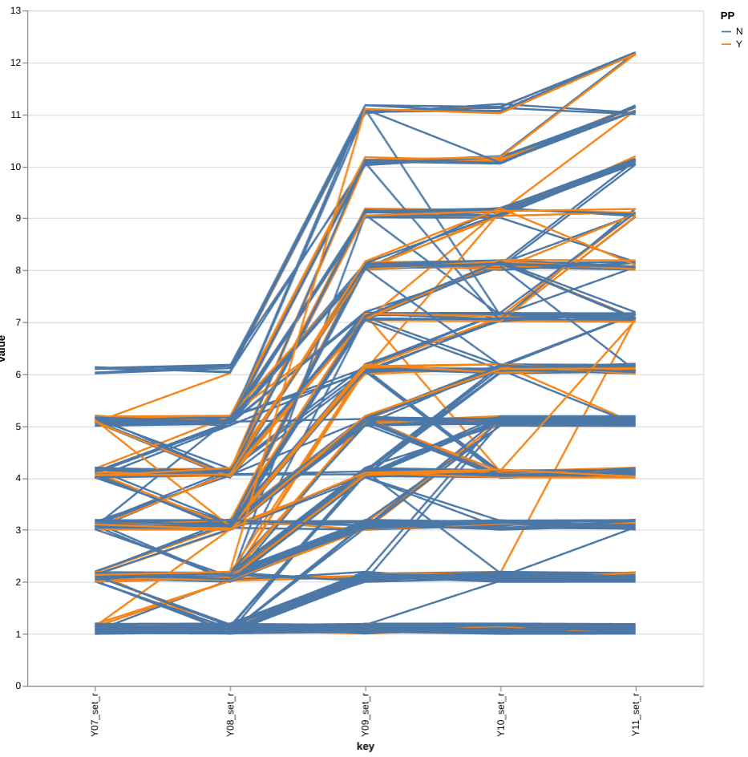
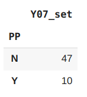
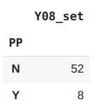

Introduction
In the UK it's often the case that on average pupils from more (financially) deprived backgrounds do not attain as high grades at school as pupils from more (financially) well off backgrounds. (This is obviously a huge generallisation and will not be the case for all pupils in all schools in all subjects.) There are many reasons for this which I don't want to go into here. At my school (and many other UK schools) pupils have historically been put into sets (groups) based on their attainment. This starts when they arrive from primary school (the first 6 years of education) at age 11 and leave after sitting GCSE exams at age 16. When they first arrive at school the exam scores from primary school are used to put them into sets. Then at the end of each year they do an exam and again this determines what set they are placed in the following year (This is a somewhat simplified version of what actually happens. In reality many other factors are taken into account such as how pupils interact with each other and their teacher's professional judgement.) What I would like to do is examine a hypothesis at the school I teach that a contributing factor or these pupils attaining lower tghan their more well off opeers is to do with the sets they are placed in. The hypothesis is that pupils from more deprived backgrounds have a tendency to "slide down" through the sets over the 5 years they are in school and are more likely to end up underperforming because of this. I will investigate this for a a single year group of pupils that have now left the school. The data set I have contains the set each pupil was in over the 5 years they were in school (Year 7 - Year 11) and also a field called PP. In the UK families that are less well off get labeled "Pupil Premium" and schools get extra funding to support them. I will compare PP students with non-PP students to see if there is any difference.
An interactive version of this post can be found and run on Google Drive here and the csv file here and also on github
Import the required libraries
import io
import altair as alt
import pandas as pd
import numpy as np
import random
from google.colab import files
Upload the csv file with the class data.
Names have been taken out of the data set in Excel for privacy and replaced with labels a1, a2 etc. The order of the pupils has also been randomised so it is no longer alphabetical. This was done in Excel before importing.
uploaded = files.upload()
y11_sets = pd.read_csv(io.BytesIO(uploaded['y11_sets_anon.csv']))
Check the types of the imported data.
y11_sets.dtypes
Convert data
There is one field that is different to the others (for some reason the Excel file had different data types) so we will convert all numeric data to float64 for consistency and check this.
y11_sets = y11_sets.astype({'Y07_set': 'float64','Y09_set': 'float64','Y08_set': 'float64', 'Y10_set': 'float64', 'Y11_set': 'float64'})
y11_sets.dtypes
Transform Data
Sometimes different year groups will contain a different number of sets. For example, there could be 11 sets in years 7 and 8 and 12 sets in years 9, 10 and 11. So a pupil who moves from set 6 in year 8 to set 7 in year 9 may not actually be changing that much in realtion to their peers. For this reason I am going to normalise the sets and create a new column for each year group. for example Y07_set_n will be the normalised set for year 7. The formula used for this is
$X_n=\frac{X-\mu}{\sigma}$
where $X$ is the unnormalised data, $\mu$ is the mean of the data, $\sigma$ is the sdandard deviation of the data and $X_n$ is the normalised data
Notice that there are some empty values which represent pupils who have joined or left the school at some point during 5 years. I will leave these values in.
y11_sets['Y07_set_n'] = (y11_sets['Y07_set'] -y11_sets['Y07_set'].mean())/y11_sets['Y07_set'].std()
y11_sets['Y08_set_n'] = (y11_sets['Y08_set'] -y11_sets['Y08_set'].mean())/y11_sets['Y08_set'].std()
y11_sets['Y09_set_n'] = (y11_sets['Y09_set'] -y11_sets['Y09_set'].mean())/y11_sets['Y09_set'].std()
y11_sets['Y10_set_n'] = (y11_sets['Y10_set'] -y11_sets['Y10_set'].mean())/y11_sets['Y10_set'].std()
y11_sets['Y11_set_n'] = (y11_sets['Y11_set'] -y11_sets['Y11_set'].mean())/y11_sets['Y11_set'].std()
y11_sets.head()
To assit in some visuals later I am going to add extra random fluctuation to the whole number that represents the set. This will be explained in more detail below. To do this I will create an array of random numbers in it's own data frame called rand and check this looks ok.
rand = pd.DataFrame()
variation = 0.2
rand['RAND1'] = np.random.random(size=len(y11_sets))*variation
rand['RAND2'] = np.random.random(size=len(y11_sets))*variation
rand['RAND3'] = np.random.random(size=len(y11_sets))*variation
rand['RAND4'] = np.random.random(size=len(y11_sets))*variation
rand['RAND5'] = np.random.random(size=len(y11_sets))*variation
rand.head()
Now I will create a new column for each year group with the random number added on. For example Y07_set_r will be the set number for year 7 with a random fluctuation added.
y11_sets['Y07_set_r'] = y11_sets['Y07_set'] + rand['RAND1']
y11_sets['Y08_set_r'] = y11_sets['Y08_set'] + rand['RAND2']
y11_sets['Y09_set_r'] = y11_sets['Y09_set'] + rand['RAND3']
y11_sets['Y10_set_r'] = y11_sets['Y10_set'] + rand['RAND4']
y11_sets['Y11_set_r'] = y11_sets['Y11_set'] + rand['RAND5']
y11_sets.head()
Calculate the means
I am going to calculate the mean value of the set for each year group for the PP students and the non-PP students. For each set and group by whether they are a PP student or not. We round off all the data to two decimal places. We also add a row that contains the difference between the values for the PP and non-PP students.
mean_by_year_grouped = y11_sets.groupby('PP')[['Y07_set_n', 'Y08_set_n', 'Y09_set_n', 'Y10_set_n', 'Y11_set_n']].mean()
mean_by_year = y11_sets[['Y07_set_n', 'Y08_set_n', 'Y09_set_n', 'Y10_set_n', 'Y11_set_n']].mean()
mean_by_year_grouped.loc['A'] = [mean_by_year['Y07_set_n'],mean_by_year['Y08_set_n'],mean_by_year['Y09_set_n'], mean_by_year['Y10_set_n'], mean_by_year['Y11_set_n']]
summary_data = mean_by_year_grouped.round(2)
summary_data.loc['D'] = summary_data.diff().loc['Y']
summary_data.head()

Here N is the mean values for the non PP students, Y the mean values for the PP students, A is the mean values for all the students (Note that due to the values being normailsed a mean value of zero is correct) and D the difference in the mean values between the PP and non PP students.
Analysis
We need to bare in mind that the sets have been normalised to values between -1 and 1. So a value close to -1 represents a high attaining set and a value close to 1 represents a low attaining set. If there were 10 sets in a year group then a normalised value of 0.2 would represent about a set dfifference. When pupils enter the school in year 7 the difference between the PP and non-PP is 0.15, slightly less than a set difference. This increases slightly in year 8 to 0.22, about a set difference. The increase to year 9 however represents to biggest change to 0.41 and then continues to increase to year 10 and year 11. So it would appear from this analysis that the PP students do indeed appear to "slide down" through the sets in their time at school.
Visualisation
I'm going to create a parallel coordenates plot to track the movement for all pupils as they change sets throughout the years. To emphasize the numbers of pupils moving I have added a small random value to each set number. Without this most of the lines lie on top of each other and it is difficult to see any variation. The amount of variation can be experimented with by changing the variable "variation" above and rerunning that cell and the one below it.
PP and non-PP students have been given different colours.
alt.Chart(y11_sets, width=700, height=700).transform_window(
index='count()'
).transform_fold(
['Y07_set_r', 'Y08_set_r','Y09_set_r', 'Y10_set_r', 'Y11_set_r']
).mark_line().encode(
x='key:N',
y='value:Q',
detail='index:N',
color='PP:N'

Observations
Not many PP pupils seem to make it into the highest set in year 7. Those that do seem to have been moved down in year 8. Checking the actual numbers below we can see that only 8 PP pupils out of 60 remain in the highest set in year 8.
y11_sets[y11_sets['Y07_set']==1.0].groupby('PP')[['Y07_set']].count()
y11_sets[y11_sets['Y08_set']==1.0].groupby('PP')[['Y08_set']].count()


In years 7 and 8 pupils are split into two equal half year groups so there are two groups for set 1, two for set 2 etc. In years 9-11 pupils are put together into a single year group so there is now only 1 group for set 1 and one group for set 2 etc. The PP pupils definately seem to loose out during this change. There seem to be a higher proportion of PP pupils "slipping down" than non-PP and I would suggest that more attention needs to focused on this transition to ensure the PP pupils are not hard done by.
Comments